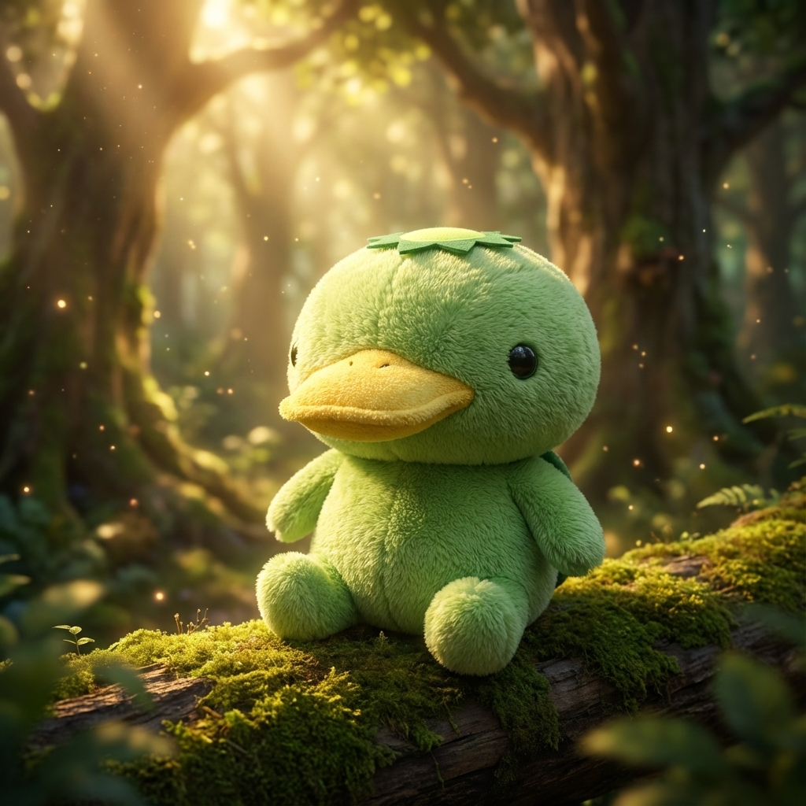
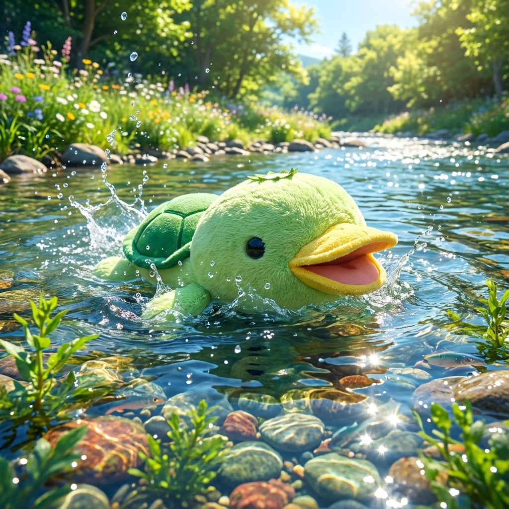

Kappa-chanとは？
清らかな川辺と深い森に囲まれた場所に住む、伝説の生き物…ではなく、とってもフレンドリーなカッパの子供です。
大好物はキュウリとお相撲。でも、一番好きなのは森の仲間たちとお昼寝すること。
ふわふわの緑色の体と、トレードマークの頭のお皿がチャームポイントです。
My Journey
Kappa-chanのこれまでの歩み
0歳
伝説の始まり
エメラルドの泉で誕生しました。生まれた時からお皿の輝きは飛び抜けており、長老たちを驚かせたと言われています。
10歳

わんぱく時代
カッパ小学校に入学。「きゅうり早食い競争」で三連覇を達成し、「きゅうり王」の異名をとりました。毎日が冒険の日々。
20歳

人間の世界へ
広い世界を見るために都会へ旅立ちました。人間の文化に触れ、特にネオン街の輝きに心を奪われました。正体を隠して寿司屋で修行したことも。
30歳

森への帰還
都会の喧騒を知り、改めて故郷の森の豊かさに気づいて帰郷。古来より伝わる「カッパ泳法」を若い世代に教える指導者となりました。
40歳
現在
森でのスローライフを満喫中。相撲の腕は達人級に。最近は上質な抹茶ときゅうりの浅漬けのペアリングを楽しむのが日課です。
Challenge Kappa!
カッパとオセロで勝負！カッパは頭脳明晰です。
Gallery
森の木漏れ日の中で
冷たい川でスイスイ
みんなでピクニック
Stay Connected
Kappa-chanの最新情報をチェックしよう！